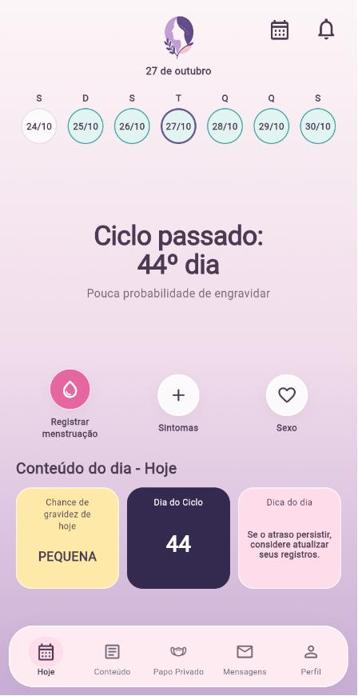
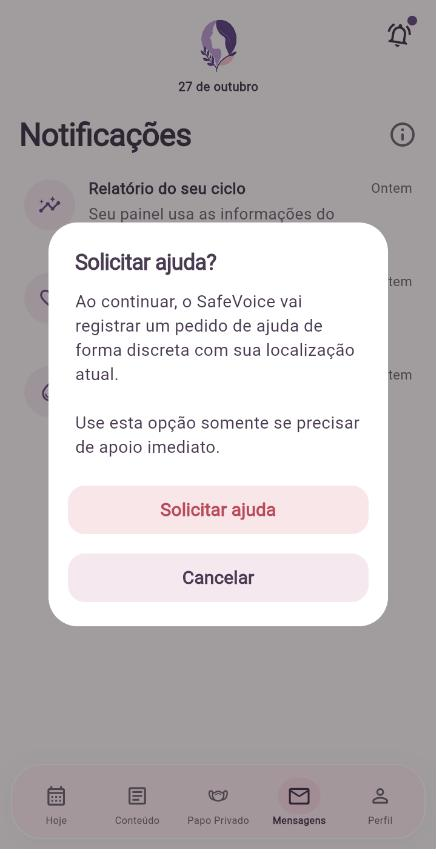
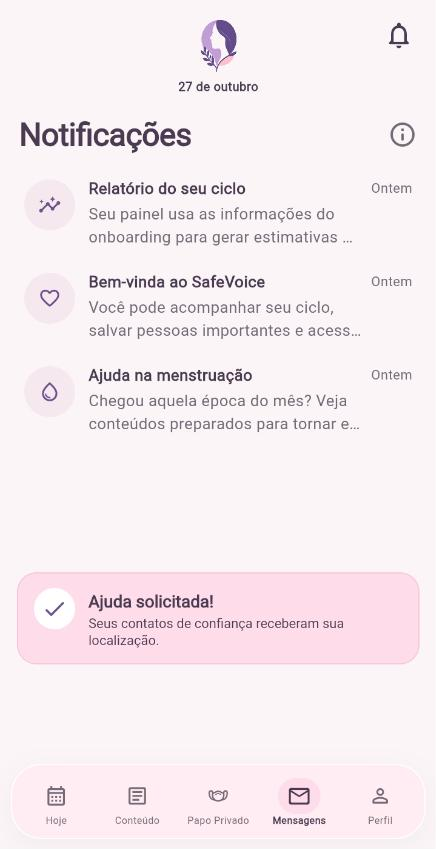

FETIN 2026 · 2nd place
SafeVoice
An emergency app for victims of domestic violence that, on the outside, is just a period tracker.
With 4 taps on the bell, or 3 presses on the volume buttons, it sends location and audio to the support network via WhatsApp. I was the full-stack developer: the FastAPI API with a delivery queue, the Supabase database, the Flutter triggers and the tests.
Flutter · FastAPI · Supabase · WhatsApp Cloud API · GitHub Actions


